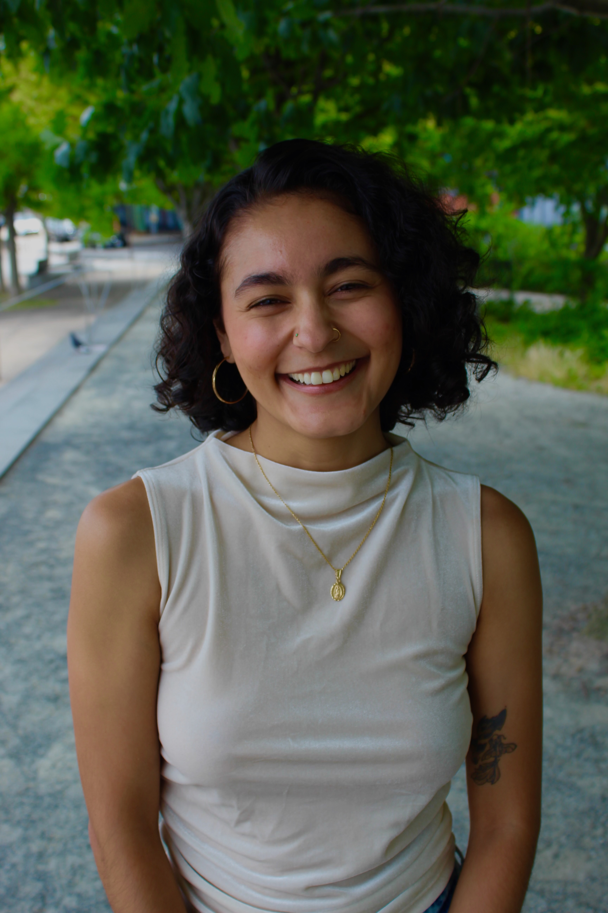

Jacqui Cardenas is a bilingual multimedia journalist. She is a proud Mexican-American who has covered topics ranging from politics, homelessness, immigration, and more. She has lived in 3 major cities including Chicago, San Francisco and now New York City. Currently a CUNY grad journalism student, her dream is to become and international politics reporter and touch people's hearts with her words.
Here are her top 3 favorite stories/books:
A compelling declaration and demystification of what it means to love all in one book, Jacqui recommends it to anyone who wants to look beyond what society teaches us love us is. Jacqui first read the book when she was 18-years-old while living in her parent's home during the height of the pandemic and Black Lives Matter Movement. It invited her to self-reflect on who were her first teachers of love, the power behind it when sees themselves worthy of loving and how it is the only thing we need to heal ourselves and society.
2. The Jakarta Method - Vincent Bevins:This book takes a look into the imperialist history of the United States too often buried in North American history classes. Bevins traces Washington's anticommunist crusade and the violent murder programs commmitted by the CIA. Bevin's work has fueled Jacqui's passion in not only breaking down U.S. propoganda through reporting but to dare to write a book about it one day.
This book takes into account the voices of the Latinx community who are too often overlooked, including those who are trans, immigrant and others. Ramos puts the community's collective power into perspective and translates what the growing voting block means for future elections in the U.S. Jacqui remembers reading the book on her late grandmother's hammock in Mexico and feeling deeply seen by Ramos's honesty about never feeling Latina enough. Ramos is a queer, half-cuban, half-mexican journalist who grew up in conservative Miami yet carries a Spanish accent from living in Spain for many years. Always juggling between english and spanish, Mexican/American/indigenous identity, Jacqui grew to allow for herself to be seen in all of her complexities.